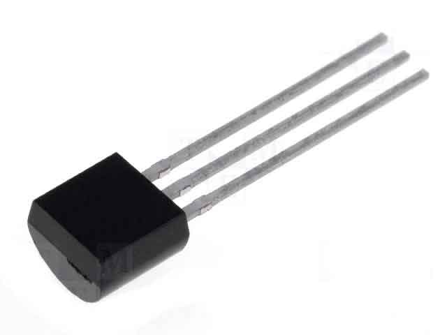
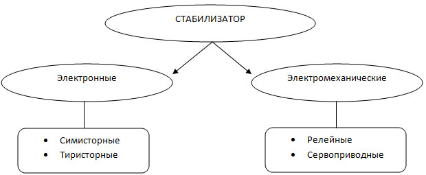

О cимисторных стабилизаторах напряжения
В Украине, как и в большинстве цивилизованных стран, существуют общегосударственные нормативы качества электроэнергии в сети бытового назначения. Эти параметры приведены в ГОСТ 13109-97 "Нормы качества электрической энергии в системах электроснабжения общего назначения".

Но зачастую, вследствие разных причин, эти нормативы не соблюдаются энергоснабжающими оргнизациями (например, Облэнерго). Особенно существенна эта проблема в частном секторе, где неизолированные провода протянуты по столбам над землей, трансформаторы и распределители устарели, а сосед в очередной раз решил побаловаться электросваркой. Все это, и не только, выливается в то, что в Вашем доме некорректно работает бытовая техника, мерцают и перегорают лампы, сгорают предохранители или, еще хуже, сама техника.
Тогда возникает совершенно очевидный вопрос: «Как защитить от скачков напряжения и перенапряжения бытовую технику?». Максимально удобный и надежный способ – это установить в доме стабилизатор сетевого напряжения. Установленный в подвале или в прихожей возле электрощита стабилизатор, будет выводить показатели качества электроэнергии во всем Вашем доме до ГОСТовых значений и даже выше.
Теперь возникают таике вопросы: «Как выбрать стабилизатор для дома?», «Какой стабилизатор защитит мою технику?» и «Что нужно учитывать при выборе стабилизатор для дома?».
Для начала, давайте разберемся, а что вообще такое стабилизатор напряжения, какие они бывают и как работают. Почему говорят: стабилизатор напряжения для дома, для дачи, для квартиры, промышленные, лабораторные… Чем они отличаются?
Итак СТАБИЛИЗАТОР НАПРЯЖЕНИЯ – это устройство, преобразующее электрическую энергию таким образом, что на выходе напряжение всегда соответствует заданным пределам, даже если на входе были значительные отклонения.

ПРИНЦИП ДЕЙСТВИЯ:
|
Симисторные/тиристорнеы |
Релейные |
Сервоприводные |
|
Симисторные стабилизаторы считаются самыми надежными. Они обеспечивают стопроцентную защиту от любых колебаний электросети. |
Релейные стабилизаторы напряжения работают по принципу коммутации обмоток трансформатора с помощью реле. |
В основе работы электромеханического стабилизатора лежит токосъемник, который передвигается по специальному трансформатору. |
ПРЕИМУЩЕСТВА:
|
Симисторные/тиристорне |
Релейные |
Сервоприводные |
|
1. Быстродействие (10-20 мс). |
Главное преимущество подобных устройств - это большой запас по пусковым токам. |
1. Относительно низкая стоимость. |
НЕДОСТАТКИ:
|
Симисторные/тиристорне |
Релейные |
Сервоприводные |
|
В недорогих моделях при переключении обмоток возможно дискретное изменение выходного напряжения (это видно по лампам освещения). На работе техники данное явление никак не отражается. |
1. Невысокая надежность (обгорание и залипание контактов реле). |
1. Наличие в конструкции движущихся частей, быстрый износ трущихся деталей. |
ПО ТИПУ ПОДКЛЮЧЕНИЯ
|
Однофазные |
Трехфазные |
ПО НАЗНАЧЕНИЮ
|
Бытовые |
Промышленные |
|
Стабилизаторы напряжение бытовые предназначены для использования в жилых помещениях - квартирах, домах, на дачах. Выпускаются стабилизаторы напряжения для компьютеров, телевизоров, холодильников, стиральных машин, котлов. |
Промышленные стабилизаторы напряжения отличаются от бытовых более высокой мощностью. Как правило, они используются на крупных предприятиях, складах, в больших магазинах и офисах. Чем больше в помещении оргтехники, тем более мощные стабилизаторы необходимо покупать. |
Как видим, симисторные и тиристорные стабилизаторы напряжения
- самые технологичные и современные на сегодняшний день. Они являются
наилучшими в плане схемотехнического решения, обладают прекрасной
функциональностью, высокой надежностью. Цена на симисторные
(тиристорные) стабилизаторы несколько выше релейных аналогов по
мощности, однако преимущества в скорости реакции, точности выходного
напряжения, сохранения правильной синусоиды, широчайший диапазон
входного напряжения, безшумность, долговечность и многие другие
преимущества делают электронные (симисторные и тиристорные)
стабилизаторы оптимальным и наилучшим решением для
дома.Электромеханические стабилизаторы (сервоприводные, релейные),
представленные на рынке Украины почти все, если не все, произведены в
Китае. Опыт эксплуатации таких стабилизаторов показал, что механические
узлы в них изнашиваются в первую очередь. Довольно часто владельцам
таких стабилизаторов приходится обращаться в сервисные центры для их
ремонта, и уже за 2-3 года эксплуатации потраченные деньги на ремонт
могут превысить цену самого стабилизатора. А сколько стоят потраченные
нервы и время?..
Что касается характеристик Электромеханических стабилизаторов, то
основным их недостатком в числе прочего есть низкое быстродействие, т.е.
к примеру, если на линии произойдет «скачек напряжения» до 300 вольт
или более, то они не защитят вашу технику от такого «скачка».